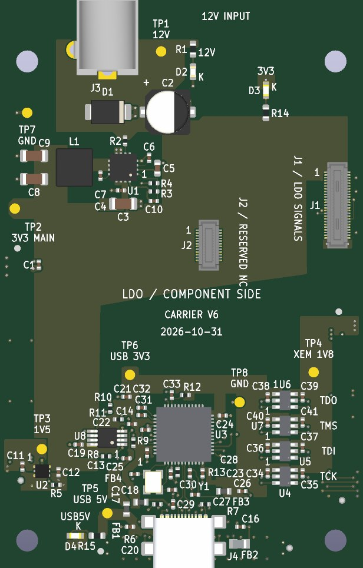
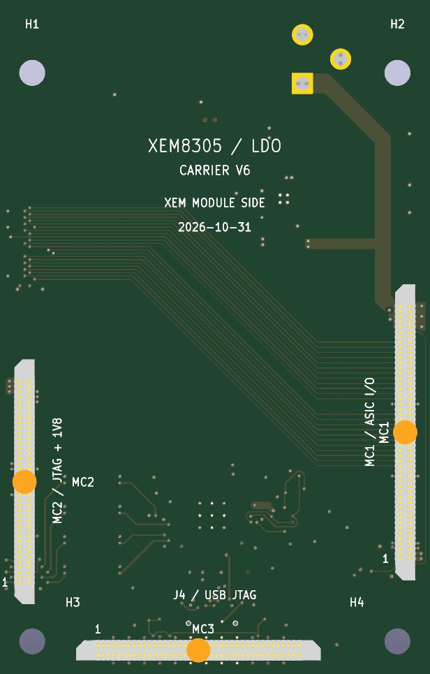

1In short
The Direct LDO Carrier V6 connects an Opal Kelly XEM8305 FPGA module straight to the existing LDO board and one ASIC board. It takes 12 V, powers the XEM8305, makes 3.3 V for the LDO board and the 1.5 V I/O supply of FPGA bank 64, and has a USB-C JTAG port for Vivado. All 23 ASIC signals run on bank 64 at 1.5 V. Firmware runs on the XEM8305; the PC talks to it over the XEM8305's own USB 3 port with Opal Kelly FrontPanel.
| Board | Direct LDO Carrier V6 (KiCad title "XEM8305 / LDO Carrier"), board edited 31 Oct 2026, 20:17 CST |
|---|---|
| Status | Built at JLCPCB. Howard checked the 12 V input and the 3.3 V rail on 23 Nov 2026: both good. XEM8305, LDO board and ASIC not yet run together. |
| Size | 53 × 83 mm, 4 copper layers (both inner layers ground), 1.6 mm |
| FPGA module | Opal Kelly XEM8305-AU15P: AMD Artix UltraScale+ XCAU15P-2FFVB676E (specifications) |
| ASIC signals | 23 single-ended lines, LVCMOS 1.5 V: 11 into the FPGA (8 data, READ, SYNC, returned clock), 12 out of it |
| Ready-made files | XDC pin file ↓ · pin map CSV ↓ · schematic PDF · KiCad project and fab files |
2What you need
- Direct LDO Carrier V6, an Opal Kelly XEM8305, the existing LDO board and one ASIC board.
- A regulated 12 V supply, centre-positive 2.1 mm barrel plug (J3 is a CUI PJ-102AH). Use a current-limited bench supply for first power-up. The XEM8305 accepts 5–15 V (Opal Kelly power page); the carrier has no reverse-polarity protection.
- Supplies for the LDO board's stimulation rails (its own inputs, not from this carrier; see section 4).
- A USB 3 cable from the PC to the XEM8305 (FrontPanel), and optionally a USB-C cable to carrier J4 for Vivado JTAG.
- AMD Vivado 2021.1.1 or newer (XEM8305 board file support, Opal Kelly board file page) and the Opal Kelly FrontPanel SDK (docs).
- A multimeter for the test points.
3Board, connectors and test points


| Part | What it is | Notes |
|---|---|---|
| MC1, MC2, MC3 | XEM8305 sockets (Samtec ERF6, 5.00 mm stack) | MC1: bank 64 ASIC I/O, 12 V in, 1.5 V VCCO_64, XEM8305_PG. MC2: JTAG (1.8 V), XEM 1.8 V out, SYSMON reference link. MC3: transceivers, unused. |
| J1 | LDO board signal socket, Hirose DF40C(2.0)-50DS-0.4V(51) | 23 ASIC signals, 3.3 V on pins 1–2, GND on 49–50 (table in section 6) |
| J2 | LDO board 24-pin socket, DF40C(2.0)-24DS | Mechanical only, no pin connected |
| J3 | 12 V barrel jack | Centre positive; feeds the XEM8305 and U1 |
| J4 | USB-C (USB 2) for JTAG | FT232H U3 → level shifters U4–U7 → XEM8305 JTAG on MC2. Copied from the Opal Kelly BRK8305 (BRK8305 schematic) |
| D2 / D3 / D4 | LEDs: 12 V present / 3.3 V present / USB 5 V present | Presence only, not power-good |
| Test point | Net | Expect | When |
|---|---|---|---|
| TP1 | +12V | 12 V | 12 V plugged in |
| TP2 | +3V3 (buck output) | about 3.31 V | 12 V plugged in |
| TP3 | +1V5 = VCCO_64 | 1.5 V | Only with the XEM8305 fitted and powered (U2 waits for XEM8305_PG); 0 V without it |
| TP4 | XEM 1.8 V output | 1.8 V | XEM8305 fitted and powered |
| TP5 | USB 5 V from J4 | 5 V | JTAG cable in J4 |
| TP6 | FT232H 3.3 V | 3.3 V | JTAG cable in J4 |
| TP7, TP8 | GND (power side, USB side) | 0 V reference | always |
4Power
One 12 V input powers everything on the carrier side. The order is enforced by hardware:
- 12 V (J3) goes to the XEM8305's VDCIN pins (MC1.91–99) and to the buck converter U1. D1 (SMBJ15CA) clamps spikes; C2 is the 220 µF bulk capacitor.
- U1, TI TPS54429, makes 3.3 V (R3 73.2 kΩ / R4 22.1 kΩ, about 3.31 V; soft start about 1.3 ms) for the LDO board through J1.1–J1.2 (TPS54429 datasheet).
- The XEM8305 starts from 12 V. When all its rails are good it drives XEM8305_PG high (1.8 V level, MC1.90).
- U2, TI TLV75515P, turns on from XEM8305_PG and makes 1.5 V from 3.3 V for VCCO_64 (MC1.2, MC1.4) (TLV755P datasheet). This follows Opal Kelly's rule that VCCO must come up only after the module's own rails (power page). R5 (100 kΩ) holds U2 off while the XEM8305 is absent.
I/O voltage. Chong noted on 23 Nov that the I/O voltage must be set before plugging in the LDO/ASIC board. On this carrier the bank 64 voltage is fixed in hardware at 1.5 V (U2); there is nothing to set in FrontPanel. Before fitting the LDO board, confirm TP3 reads 1.5 V with the XEM8305 fitted. Bank 64 is an HP bank: Opal Kelly allows 0.95–1.90 V (expansion connectors). Banks 84–86 have no VCCO on this carrier and cannot be used.
LDO board side. The LDO board makes the ASIC's nine supplies with nine LT3042 regulators (six at 1.5–1.6 V, a 0.75 V reference, and a 9 V pair for stimulation) from the 3.3 V on J1 and from its own separate inputs for the stimulation rails (INPUT_VDD10 on its J15, INPUT_VSS10 on its J8, analog ground on J17). Those inputs are not supplied by this carrier. This summary comes from the original LDO board design in the ASIC reference (4 Oct 2026); fitted values on the LDO board are not confirmed.
Current limit on J1. The two 3.3 V contacts are rated 0.3 A each (0.6 A total). Measure the 3.3 V current at first power-up and stop to investigate if it nears 0.5 A.
5First power-up, step by step
- Look at the polarity and pin-1 marks of U1, U3, C2, D1–D4, J3, J4, U2 and U8 against Figure 2.
- Nothing fitted: check with the meter that 12 V (TP1), 3.3 V (TP2) and 1.5 V (TP3) are not shorted to GND (TP7).
- Apply 12 V from a current-limited supply (start at about 0.5 A limit). TP1 = 12 V, TP2 ≈ 3.31 V, D2 and D3 on, TP3 = 0 V. Done by Howard on 23 Nov 2026: 12 V and 3.3 V good.
- Power off. Fit the XEM8305 only and power on. TP4 = 1.8 V and TP3 = 1.5 V. The XEM8305 PWR GOOD LED (D9) should light.
- Connect the XEM8305 USB 3 port. FrontPanel should list the device. Load a test bitstream with the XDC from section 6 and blink the module LEDs.
- Optional JTAG: plug USB-C into J4 (D4 on, TP5 = 5 V, TP6 = 3.3 V). Program the FT232H once (section 7) before Vivado can see it.
- Power off. Fit the LDO board (and only then the ASIC board), with the firmware holding every output low. Power on, measure the 3.3 V current and the LDO board's outputs before running the ASIC.
This order comes from the V6 production review (2 Nov 2026). The ASIC side gets 3.3 V as soon as 12 V is on, before bank 64 is powered; nobody has shown this is harmful, but it is not proven safe either. Bring the ASIC up last and keep FPGA outputs low until the bitstream is running.
6ASIC pin map and XDC
Every ASIC signal, from the LDO board socket J1 to the FPGA ball. Taken from the V6 netlist and checked ball by ball against the Opal Kelly XEM8305 pin list (pins.opalkelly.com): all 23 agree. All are bank 64, LVCMOS15.
Use only this pin map for V6. The older file xem8305_asic_bank64_candidate.xdc (5 Oct 2026) and the ASIC reference's signal table were made for an earlier carrier: 22 of 23 balls are wrong, and two outputs would fight ASIC outputs (SPI_CLK on V6's D7 net, SPI_DINL on D6).
Download the XDC ↓ · Pin map CSV ↓ (includes XEM trace length and delay per pin)
| Signal | Direction | What it does | LDO J1 | XEM MC1 | FPGA ball | FPGA pin name | XDC port |
|---|---|---|---|---|---|---|---|
D1 | ASIC → FPGA | Recording data line 1 of 8 (serial ADC bits). | J1.4 | MC1.85 | AF22 | B64_L7N | asic_d1 |
D2 | ASIC → FPGA | Recording data line 2. | J1.6 | MC1.83 | AE22 | B64_L7P | asic_d2 |
D3 | ASIC → FPGA | Recording data line 3. | J1.8 | MC1.81 | AE23 | B64_L8N | asic_d3 |
D4 | ASIC → FPGA | Recording data line 4. | J1.10 | MC1.79 | AD23 | B64_L8P | asic_d4 |
CLKH | FPGA → ASIC | Master clock to the ASIC (intended 32 MHz). | J1.12 | MC1.77 | AC23 | B64_L9N | asic_clkh |
CHIP_RESET | FPGA → ASIC | Whole-chip reset, active high. | J1.14 | MC1.75 | AC22 | B64_L9P | asic_chip_reset |
IMP_TEST | FPGA → ASIC | Impedance-test control. Hold low unless testing. | J1.18 | MC1.71 | AA22 | B64_L10P | asic_imp_test |
FE_RESET | FPGA → ASIC | Amplifier (front-end) reset, high = reset. | J1.20 | MC1.69 | AE21 | B64_L11N_GC | asic_fe_reset |
SPI_CLK | FPGA → ASIC | Settings clock, shared by both settings data lines. | J1.22 | MC1.49 | AB20 | B64_L21N | asic_spi_clk |
SPI_LATCH | FPGA → ASIC | Settings latch: one high pulse after the last bit. | J1.24 | MC1.65 | AC21 | B64_L12N_GC | asic_spi_latch |
SPI_DINL | FPGA → ASIC | Settings data, left half of the chip. | J1.26 | MC1.63 | AB21 | B64_L12P_GC | asic_spi_dinl |
STIM_START | FPGA → ASIC | Stimulation start pulse. Low at idle. | J1.27 | MC1.73 | AB22 | B64_L10N | asic_stim_start |
SPI_DINR | FPGA → ASIC | Settings data, right half of the chip (carries the 12-bit gain/DAC suffix). | J1.28 | MC1.57 | Y21 | B64_L19N | asic_spi_dinr |
STIM_CLK | FPGA → ASIC | Stimulation timing clock. | J1.29 | MC1.55 | Y20 | B64_L19P | asic_stim_clk |
STIM_EN | FPGA → ASIC | Stimulation enable. Low at idle. | J1.31 | MC1.53 | AB19 | B64_L20N | asic_stim_en |
STIM_CHB | FPGA → ASIC | Charge-balance phase. Low at idle. | J1.33 | MC1.37 | AA18 | B64_L24N | asic_stim_chb |
SYNC | ASIC → FPGA | Frame marker from the ASIC. | J1.34 | MC1.51 | AA19 | B64_L20P | asic_sync |
CLK32MHZ | ASIC → FPGA | Clock returned by the ASIC. Capture D1–D8 and READ with it. On a global-clock pin. | J1.36 | MC1.67 | AD21 | B64_L11P_GC | asic_clk32mhz |
D5 | ASIC → FPGA | Recording data line 5. | J1.38 | MC1.47 | AA20 | B64_L21P | asic_d5 |
D6 | ASIC → FPGA | Recording data line 6. | J1.40 | MC1.45 | AC17 | B64_L22N | asic_d6 |
D7 | ASIC → FPGA | Recording data line 7. | J1.42 | MC1.43 | AB17 | B64_L22P | asic_d7 |
D8 | ASIC → FPGA | Recording data line 8. | J1.44 | MC1.41 | AA17 | B64_L23N | asic_d8 |
READ | ASIC → FPGA | Group marker from the ASIC: high on the cycle that starts each 64-cycle READ slot. | J1.46 | MC1.39 | Y17 | B64_L23P | asic_read |
Other module signals you may want (USB host interface, clocks, LEDs):
| Host interface | FrontPanel okHost gives a 100.8 MHz clock synchronous to USB. Its pin constraints come from the FrontPanel SDK samples or the Pins site generator, not from this file. |
|---|---|
| Board clock | 156.25 MHz LVDS oscillator on J23 (P) / J24 (N), bank 66. Not synchronous to okHost. |
| LEDs | D1–D6 on U19, V19, T24, U24, V24, W23 (bank 65). Drive 1 = on. |
| Power good | XEM8305_PG is also readable as a FrontPanel device sensor (device sensors). |
| SYSMON | The carrier ties MC2.14 (VREFP) to MC2.16 (GNDADC), selecting the internal SYSMON reference as Opal Kelly requires. |
7Loading the FPGA
Vivado project. Part xcau15p-ffvb676-2-e (or select the XEM8305-AU15P board file). Add the FrontPanel HDL (okHost and endpoints) and its host-interface XDC from the FrontPanel SDK, then add this carrier XDC.
Way 1, USB 3 (normal use). Open FrontPanel (or the SDK API: okCFrontPanel::ConfigureFPGA) and load the .bit file over the XEM8305's USB port. No extra hardware needed. The same cable then carries your data pipes and wires.
Way 2, JTAG through carrier J4 (for Vivado Hardware Manager, ILA debugging). The FT232H's settings memory U8 is blank on a new board, so Vivado does not recognise it at first. Program it once per board from the Vivado Tcl console with a serial number that is unique on your PC:
program_ftdi -write -ftdi FT232H -serial DLC6A001 -vendor "Rice" -board "Direct LDO Carrier V6" -desc "XEM8305 JTAG"Then unplug and replug J4; the target appears in Hardware Manager. Command and options per AMD UG908, "Programming FTDI devices for Vivado Hardware Manager support" (UG908); check them against your Vivado version. The JTAG circuit (FT232H U3, 12 MHz crystal Y1, SN74AXC1T45 translators U4–U7 to 1.8 V) is the Opal Kelly BRK8305 circuit (FT232H datasheet, XEM8305 JTAG page). The XEM8305's own USB port cannot be used for JTAG.
8Talking to the ASIC (firmware notes)
What is known about the ASIC's digital interface, from the original interface slides, Gerald's answers and the lab's 2026 bench firmware (Lattice ECP5 + FT600, repository FPGA_512). None of it is a guaranteed ASIC timing specification; treat numbers marked "bench firmware" as a working starting point.
Clocks
- The FPGA sends
CLKH; the ASIC returnsCLK32MHZ. Intended rate 32 MHz. Bench firmware actually sent 16 MHz in most builds (the port names still say 32 MHz). - Capture D1–D8 and READ on the falling edge of the returned clock, then process on the rising edge (later bench firmware, and Gerald's guidance). Run the capture logic in the returned-clock domain.
Recording data
- One frame = 1024 returned-clock cycles = 16 READ slots × 64 cycles. In each slot every data line carries 16 padding cycles and 48 payload bits: four interleaved 12-bit ADC words.
- Bit order is bit-interleaved, least significant bit first: ADC1 bit 0, ADC2 bit 0, ADC3 bit 0, ADC4 bit 0, then bit 1 of each, and so on to bit 11. Bench decoder:
sample[k][b] = captured[offset + 4*b + k]with offset 11 (auto-adjusted between 11 and 13). - READ is high for one clock at the start of each slot. Bench firmware did not use SYNC.
- Channel number (bench host convention):
channel = line × 64 + amplifier, 0–511. - At 32 MHz: 32 µs per frame, 31.25 kS/s per channel, 192 Mbit/s of ADC payload (24 MB/s packed, 32 MB/s in 16-bit words). Fits USB 3 FrontPanel pipes.
Settings (SPI)
- Two data lines,
SPI_DINLandSPI_DINR, shift at the same time on oneSPI_CLK; then one high pulse onSPI_LATCH. No chip select, no read-back. - Bench firmware: clock idle low, data most significant bit first from each byte, ASIC assumed to latch on the falling clock edge; 500 kHz (from 32 MHz) or 1 MHz; 4096 bits per line.
- The right-side stream ends with a 12-bit chip setting, sent first to last: DR_DAC[3:1], AR_DAC[3:1], Gain_Right[3:1], Gain_Left[3:1] (3 bits each, MSB first).
- The full meaning of every stimulation-table bit and a safe default pattern are not documented. Do not assume all-zero is safe.
Start-up order
- Hold CHIP_RESET high after power-up (bench firmware: 220 cycles of 16 MHz = 65.5 ms), then low.
- Load the settings (SPI) and latch.
- Pulse FE_RESET (high = amplifiers in reset), then start the recording clock. (Order relayed from Gerald: program, then resets, then clock.)
Stimulation
- STIM_EN, STIM_START and STIM_CHB idle low. Sequence: STIM_EN high, then a positive STIM_START pulse, then STIM_CHB after 64 STIM_CLK cycles.
- The example clocks disagree (32 kHz on one slide, 60 kHz on another); no production stimulation clock is chosen. Keep stimulation off until the settings bits are understood.
Bench firmware commands (for reference)
| Opcode | Action in the 2026 bench firmware |
|---|---|
| 0x11 | CHIP_RESET high pulse (2 clocks) |
| 0x21 / 0x22 / 0x23 | FE_RESET pulse / hold high / hold low |
| 0x31 / 0x32 | Test pattern on / off |
| 0x41 | Send the SPI settings |
| 0x42, 0x43, 0x44 | Reset write pointers; append a byte to the left / right settings memory |
| 0x45, 0x46 | Set the bit count (13 bits, low byte then high) |
| 0x60 | Start the stimulation controller |
These were FT600 commands; on the XEM8305 the same jobs map naturally to FrontPanel WireIns/TriggerIns, with recording data out through a BlockPipeOut.
9Limits and open items
| Item | What to do |
|---|---|
| No reverse-polarity or real over-voltage protection on 12 V (U1 is rated 20 V absolute; D1 clamps up to 24.4 V) | Only regulated 12 V, centre positive; current-limited supply first. |
| ASIC side gets 3.3 V before bank 64 has 1.5 V | Bring the LDO/ASIC up last; firmware drives outputs low. |
| J1 3.3 V contacts: 0.6 A rating, about 0.55 A planned | Measure at first power-up. |
| No USB ESD protection on J4 | Handle the port with care. |
| ASIC bus lines ~55 mm, unterminated | Start with DRIVE 4 / SLEW SLOW (as in the XDC); check edges with a scope. |
| ASIC timing (setup/hold), reset minimums, SPI edge and rate, full settings map, safe stimulation defaults | Not specified by any source; confirm with Gerald / measure. |
| No XEM8305 firmware exists yet | The bench firmware above is for a different FPGA and USB chip; port its logic. |
10Files and references
- Carrier V6: schematic PDF · KiCad project (open
Carrier_V1.kicad_proin KiCad 10) · JLC BOM, placement and Gerbers · board page with layout and 3D - This guide's files: XDC · pin map CSV
- Opal Kelly XEM8305: specifications · powering · expansion connectors · USB 3 host interface · clock oscillators · JTAG · pin list · FrontPanel SDK · BRK8305 schematic
- Parts: TI TPS54429 · TI TLV755P · FTDI FT232H · AMD UG908 (program_ftdi)
- Whole-system datasheet (custom-FPGA heads): System datasheet
Sources behind sections 4–9: Direct LDO Carrier V6 production review (2 Nov 2026), ASIC reference V1 (4 Oct 2026) and its review of the FPGA_512 bench firmware, all in the lab workspace.